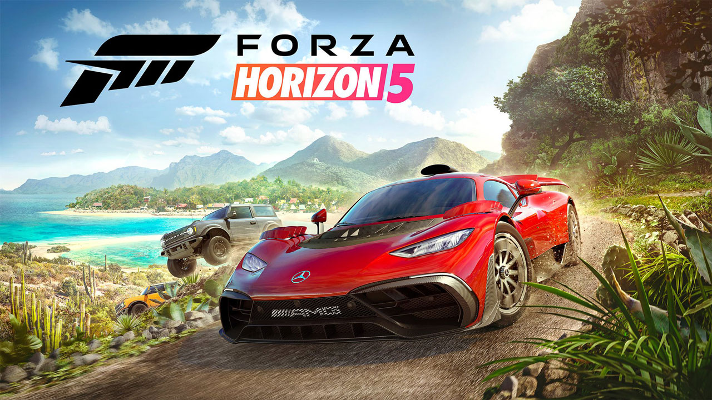
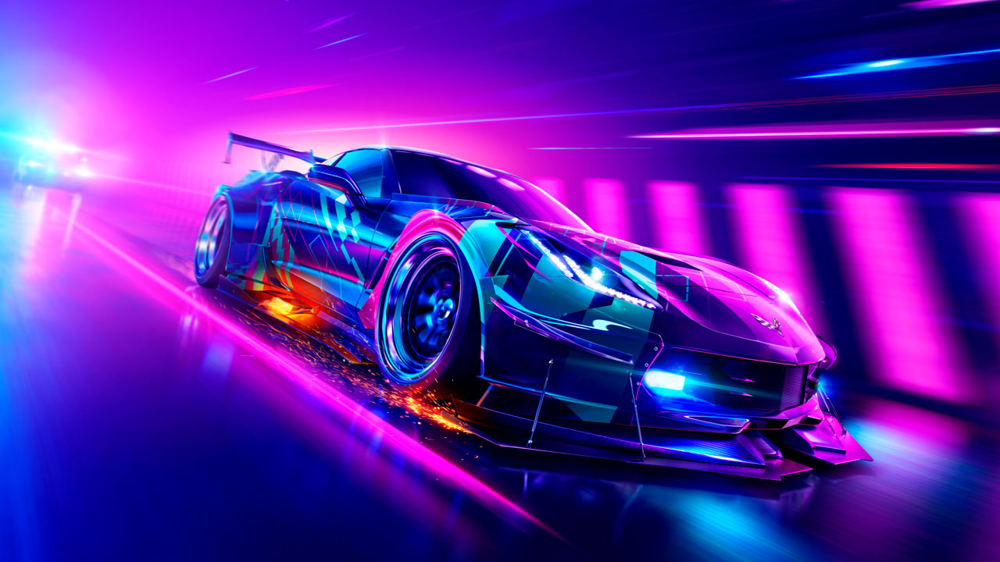
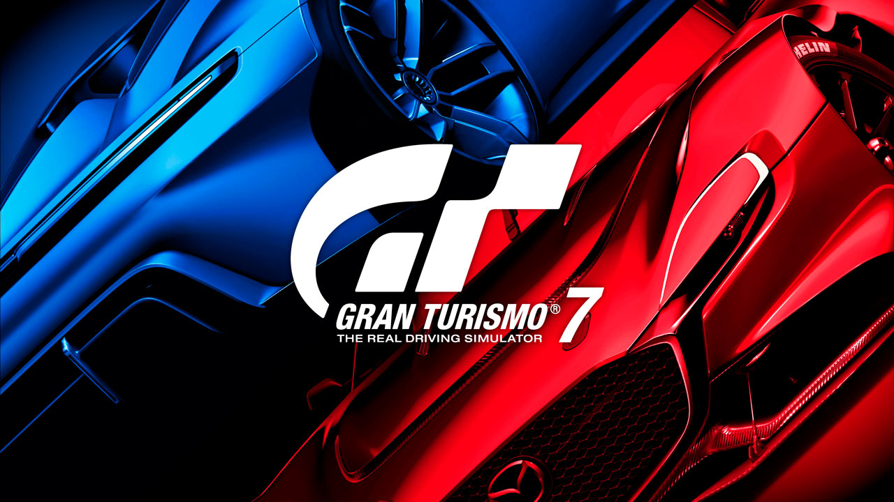
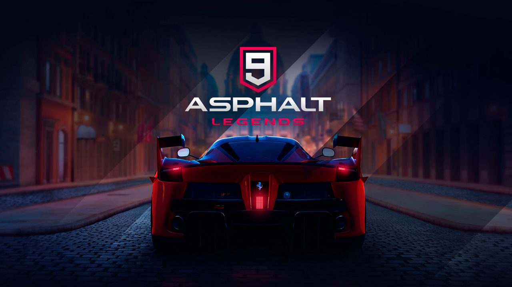
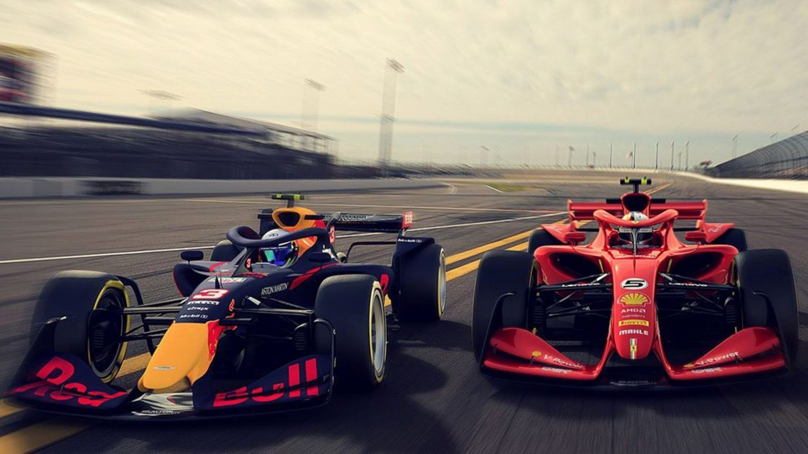

ESPECIALIDADES
Forza Horizon 5
Um jogo de corrida de mundo aberto que se passa no México, onde você pode explorar cenários deslumbrantes e participar de diversos eventos e festivais. Você pode customizar os seus carros com mais de 500 opções de peças e habilidades, e escolher entre mais de 400 modelos de veículos. Você também pode criar as suas próprias pistas e desafiar os seus amigos online. A jogadora que se destaca neste jogo é a Ana, que tem um vasto conhecimento sobre as melhores combinações de peças e habilidades para cada carro e cada pista. A sua dica é: “Não se limite aos carros mais caros e potentes, experimente diferentes tipos de veículos e veja qual se adapta melhor ao seu estilo de pilotagem”.
Need for Speed Heat
Um jogo de corrida de ação que se passa na cidade fictícia de Palm City, onde você pode participar de corridas legais durante o dia e de corridas ilegais durante a noite. Você pode modificar os seus carros com mais de 100 opções de peças e pinturas, e escolher entre mais de 120 modelos de veículos. Você também pode fugir da polícia e dos rivais que tentam te atrapalhar nas corridas. O jogador que se destaca neste jogo é o Rafa, que tem uma habilidade incrível para fazer manobras e escapar dos perseguidores. A sua dica é: “Use o nitro com sabedoria, não gaste tudo de uma vez, guarde um pouco para os momentos decisivos das corridas”.
Gran Turismo 7
Um jogo de corrida de simulação que se baseia na realidade dos automóveis, onde você pode competir em pistas reais e fictícias, com condições climáticas e iluminação variáveis. Você pode colecionar os seus carros com mais de 1000 opções de modelos e marcas, e ajustar os seus carros com mais de 200 opções de configurações e parâmetros. Você também pode participar de campeonatos online e offline, com diferentes categorias e regras. O jogador que se destaca neste jogo é o Gui, que tem uma técnica refinada e um domínio do traçado das pistas. A sua dica é: “Estude as pistas antes das corridas, conheça as curvas, as retas, as subidas e as descidas, e saiba quando acelerar, frear e virar”.
Asphalt 9: Legends
Um jogo de corrida de arcade que se passa em locais exóticos, onde você pode pilotar os carros mais incríveis e realizar acrobacias espetaculares. Você pode personalizar os seus carros com mais de 50 opções de cores e partes, e escolher entre mais de 80 modelos de veículos. Você também pode competir com outros jogadores online e participar de eventos especiais. Dica da equipe: "Configure a aceleração para manual no modo celular".
Dirt 5

Um jogo de corrida de rally que se passa em diferentes terrenos e condições climáticas, onde você pode enfrentar os desafios mais extremos e variados. Você pode escolher entre mais de 70 carros, desde clássicos até modernos, e personalizar os seus carros com mais de 100 opções de pinturas e adesivos. Você também pode criar as suas próprias pistas e compartilhar com a comunidade online. Lia domina como ninguém as pistas deste game e dá a dica: "Comece com carros menos potentes, assim você assimila melhor as pistas".
F1 Racing
Um jogo de simulação de corrida baseado no campeonato mundial de Fórmula 1. O jogo permite que você dirija um carro de F1 em diferentes circuitos oficiais, competindo contra os pilotos reais da temporada 2023. Você pode personalizar o seu carro, escolher a sua equipe, participar de treinos, classificações e corridas, e tentar se tornar o campeão mundial de F1. Desenvolvido pela Codemasters, uma empresa britânica especializada em jogos de corrida. O jogo é licenciado pela FIA, a federação internacional de automobilismo, e conta com a participação dos pilotos, equipes e patrocinadores oficiais da F1. Nosso piloto Leo se destaca como número 1 no ranking Brasil. Ele é um dos melhores pilotos do ranking online do jogo, tendo vencido várias corridas contra adversários do mundo todo. Ele também é um criador de conteúdo sobre o jogo.